My College and Module Experience
After completing grade 12 I was really fascinated by my uncle who works as a software engineer.After I visited him I came back home started studying c programming.In order to achive higher education I joined Naya Aayam Multidisplinary Institute(NAMI).We are taught 6 modules in our first year.My love for coding made web develpoment my first choice.I made sure to complete all the activities given by my professor which would help in my assingment.After getting my assingment I had already planned to start and finish it fast but it turned out to be my nightmare.With,the regular consultation with my professor made my assingment go smoothly.I also kept my background with a red and black combo because I focused on keeping my website simple and very responsive.
My experience of studying web development till now has been quite intresting.I love coding and it directly involves a lot of computer langauges.Till now I can say I have had a roller coster ride as there have been ups where I could do whatever I have wanted while creating website whereas there have been downs where a lot of things have gone wrong while crating website which has made me a litle depressed but by the help of professor I have been sucessful to overcome it.
Home

I have kept my background as blaack in colour which helps to make other fonts colourful and attractive which directly attracts the eye.I have made nav bar by which you can acess any files easily.I have given a short introduction about myself and my address as well. I have also made a hamburger icon by which you can access any files easily. I have also made my nav button hover which drectly helps when someone wants to select it.
Portfolio
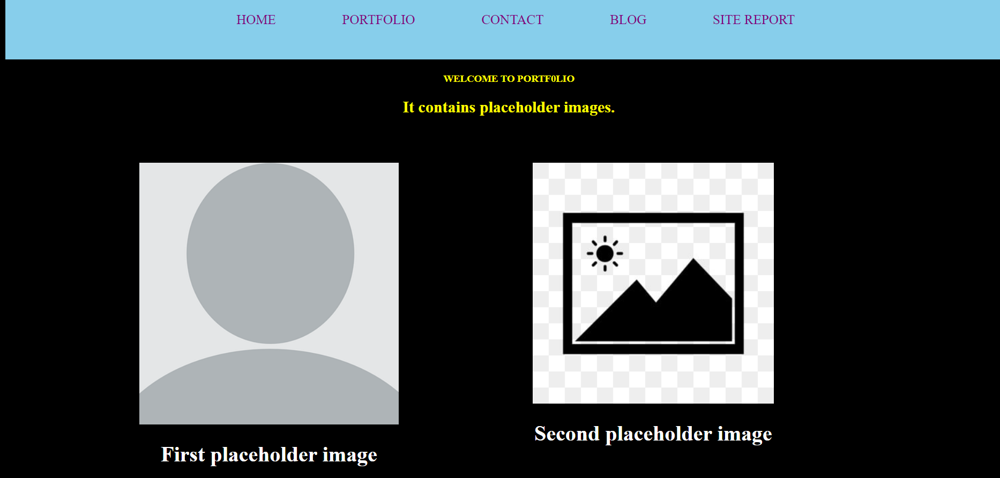
I have made sure that there are two placeholder images. I have also made sure that it is accesible by navigation.It was white which looked pale due to which I have add black color in the background.
Contact
I have tried to keep it plain. I have made it responsive so that whenever a message is recieved I recieve it in my email address.
Blog
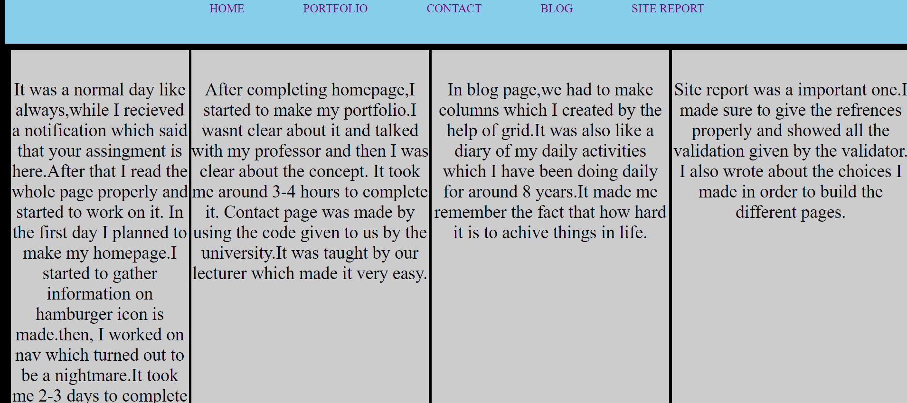
In this page I have kept grey as colour because it looks plain which automatically helps the font to look clear.I have written about my daily activities which I performed while making the website.Also about the ideas I chose onorder to make the website.
Validation Topic
All the created sites are checked by validator provided to us by the professor.It took me quite a while but finally I have managed to make all the files clear. I have first validated all the html pages and later on validated the css ones.
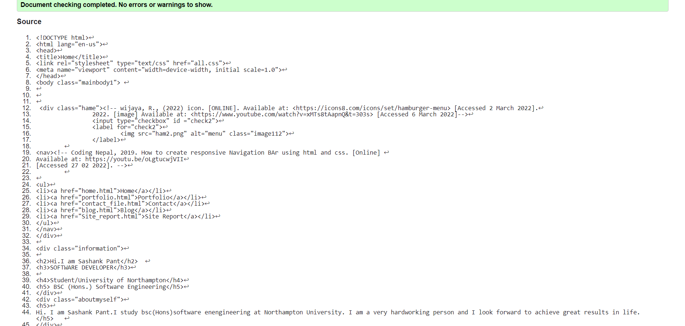
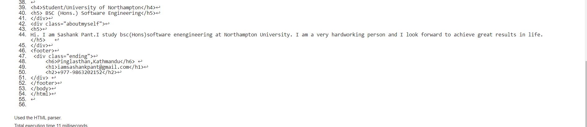

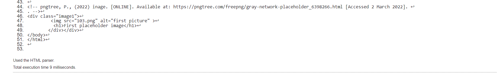

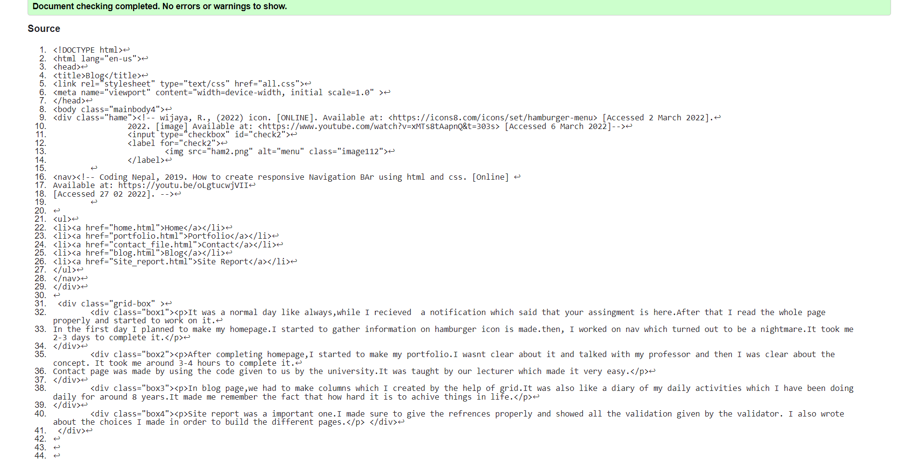

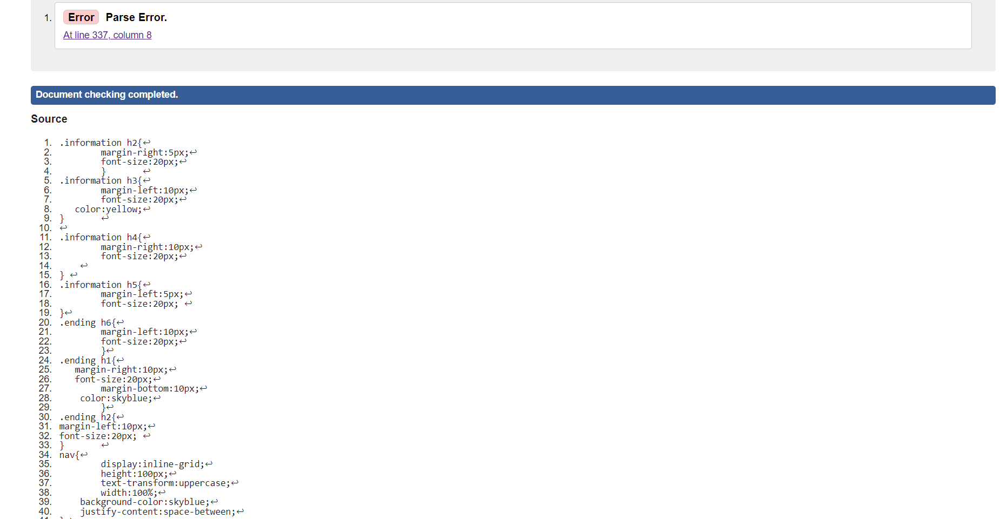
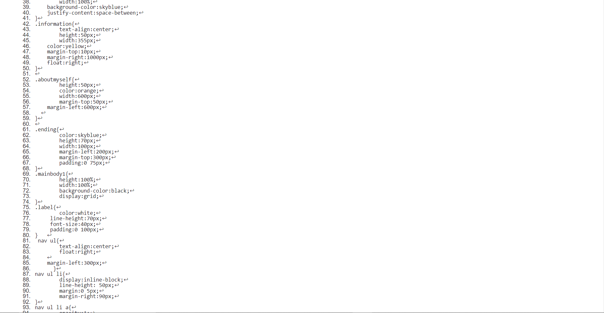
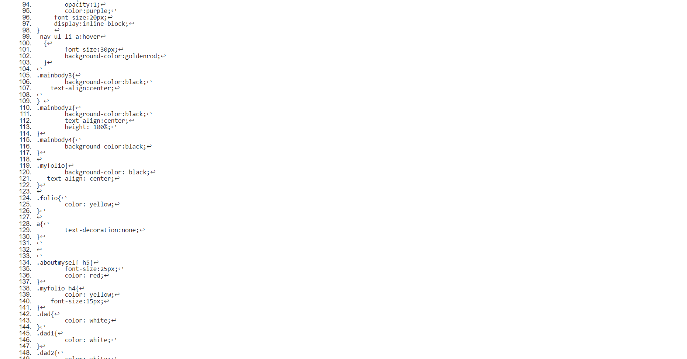

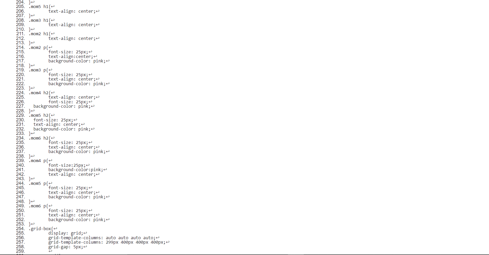
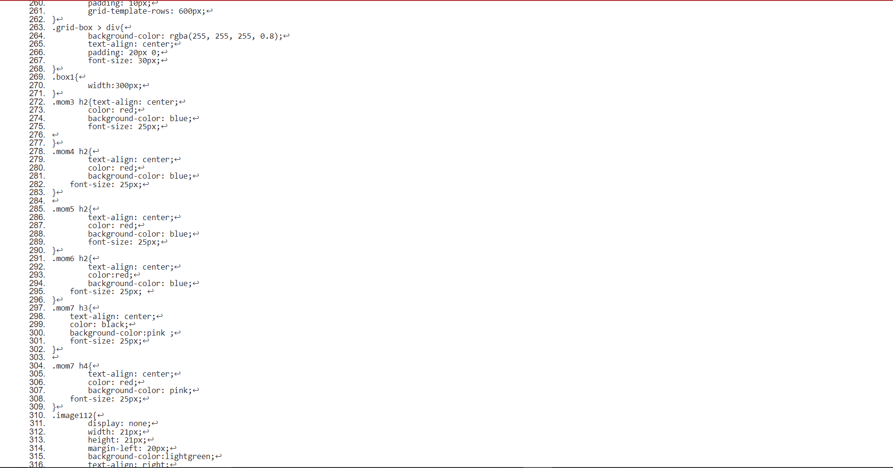
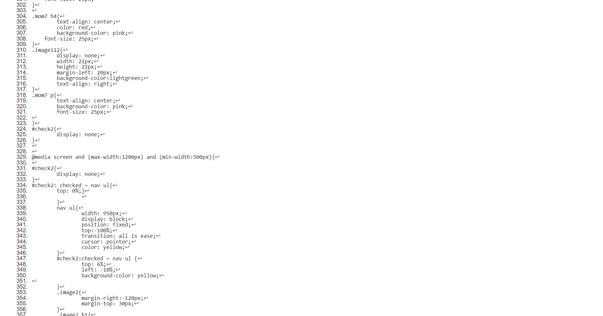
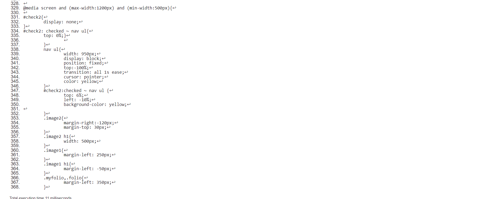
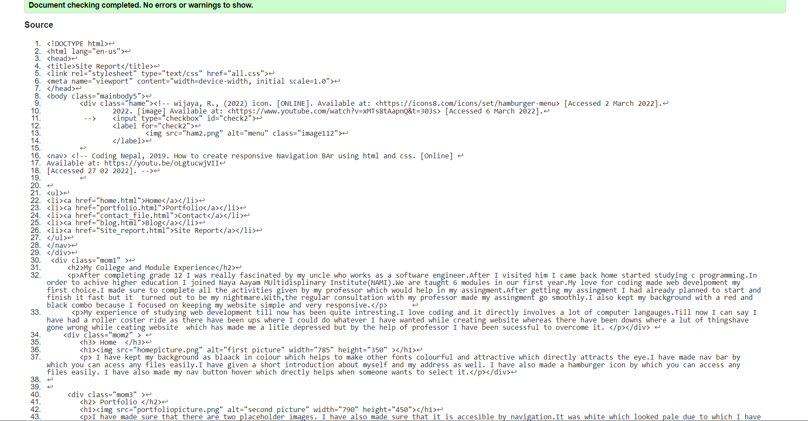
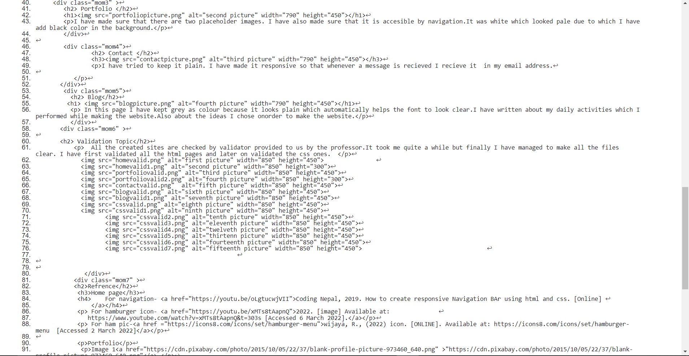
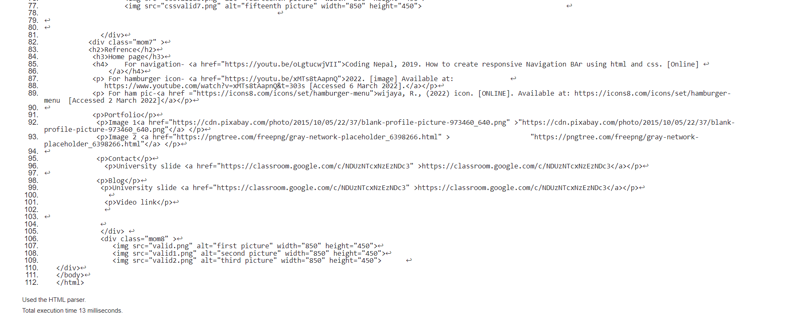
{kind=link}